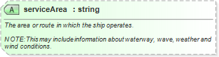

| Definition Type: | Attribute |
| Name: | serviceArea |
| Type: | string:http://www.w3.org/2001/XMLSchema |
| Containing Schema: | hcm-sdt.xsd |
| Use | (Optional) |
| Documentation: | The area or route in which the ship operates. NOTE:This may include information about waterway, wave, weather and wind conditions. |
|  |
|